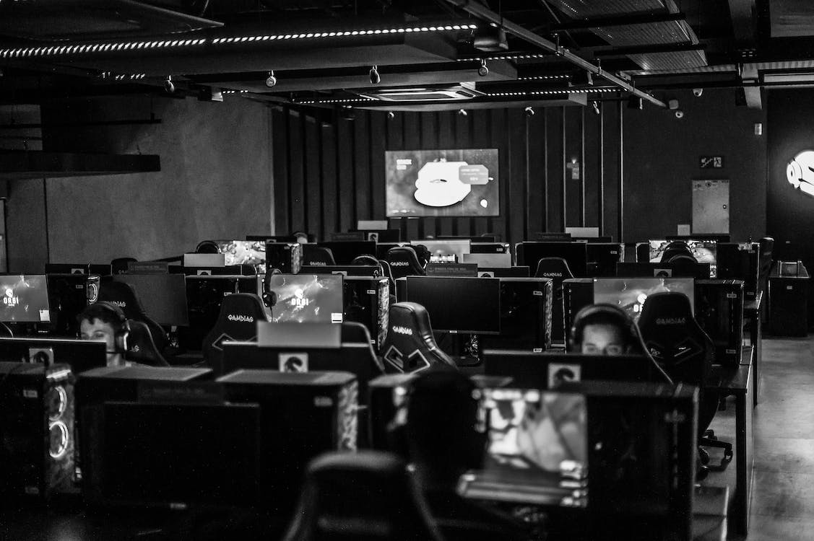

E-Gamers Headquaters
E-gaming online, also known as online gaming, refers to the activity of playing video games over the internet with other players from around the world. It has become a global phenomenon, attracting millions of players across various platforms and genres. To participate in e-gaming online, players need a reliable internet connection, a compatible gaming device such as a PC, gaming console, or smartphone, and often a subscription or access to the game servers. Additionally, competitive e-gaming may require advanced gaming peripherals like high-quality headsets, keyboards, and mice. E-gaming offers an immersive and social gaming experience, allowing players to connect, compete, and collaborate in virtual worlds.